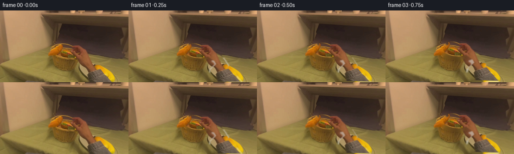
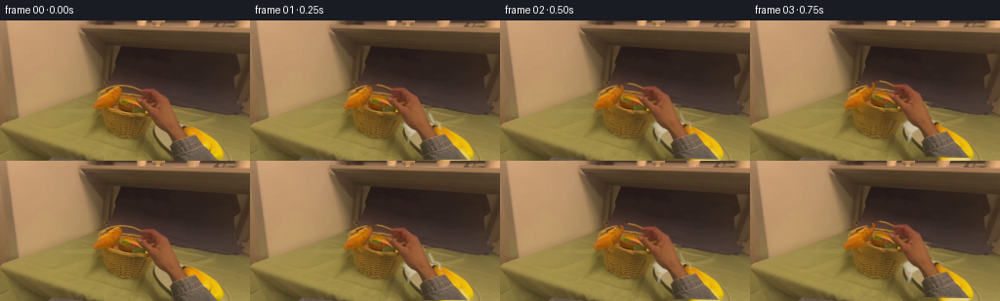
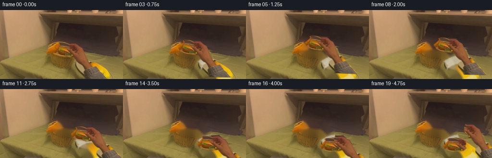
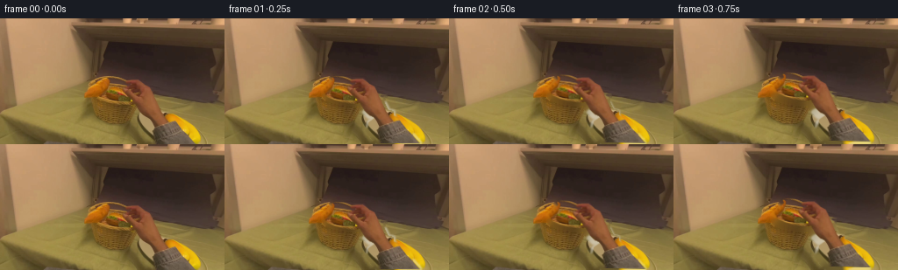
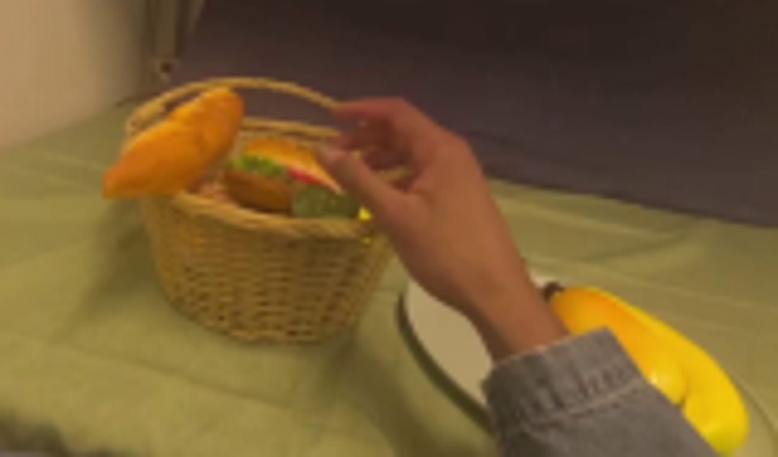
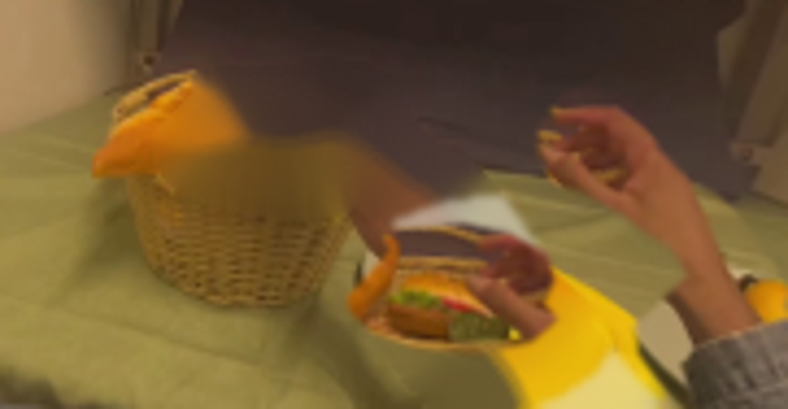
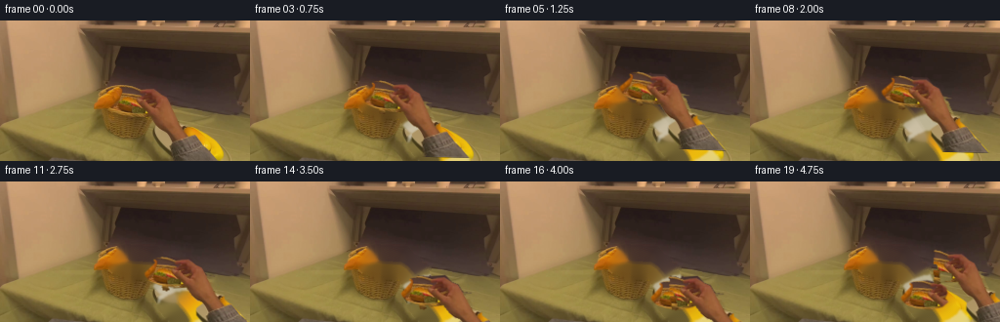
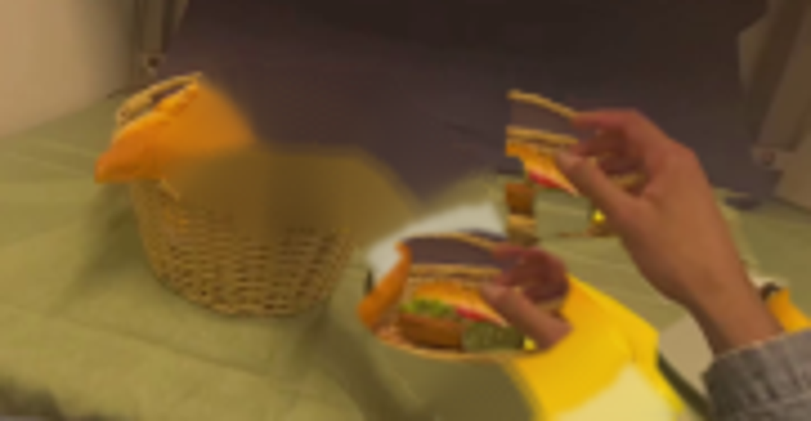
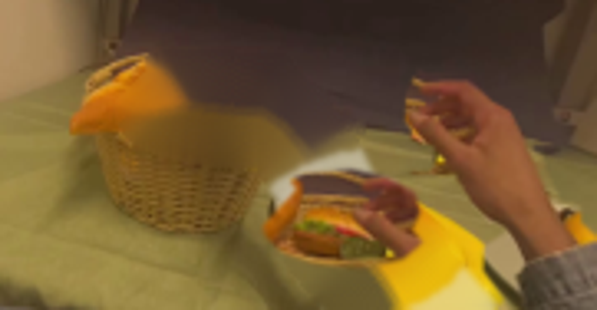

CODING AGENTS AS PIXEL WORLD MODELS
traex/GPT-5.6-Sol · common50_0019
点击播放 · 原生 RGB 像素
逐轮保存的候选
回放视频、检查图与代码变化。
每份候选均可单独播放。实际图片检查记录在下方工具轨迹中。
候选 01播放与检查图
点击播放 · 原生 RGB 像素

展开代码变化
--- 上一保存版本
+++ 本次保存版本
@@ -0,0 +1,193 @@
+from pathlib import Path
+import cv2
+import numpy as np
+from PIL import Image
+import artifact_io
+
+CASE_DIR = Path(__file__).resolve().parent
+H, W = 144, 256
+
+
+def poly_mask(points):
+ m = np.zeros((H, W), np.uint8)
+ cv2.fillPoly(m, [np.asarray(points, np.int32)], 255, lineType=cv2.LINE_AA)
+ return m
+
+
+def make_soft(mask, sigma=0.75):
+ x = mask.astype(np.float32) / 255.0
+ if sigma:
+ x = cv2.GaussianBlur(x, (0, 0), sigma)
+ return np.clip(x, 0, 1)
+
+
+def over(dst, src, alpha):
+ a = alpha[..., None].astype(np.float32)
+ return np.clip(src.astype(np.float32) * a + dst.astype(np.float32) * (1-a), 0, 255).astype(np.uint8)
+
+
+def affine_for(dx, dy, angle=0.0, scale=1.0, pivot=(181, 116)):
+ M = cv2.getRotationMatrix2D(pivot, angle, scale).astype(np.float32)
+ M[:, 2] += (dx, dy)
+ return M
+
+
+def warp_sprite(img, alpha, M):
+ wi = cv2.warpAffine(img, M, (W, H), flags=cv2.INTER_CUBIC,
+ borderMode=cv2.BORDER_CONSTANT, borderValue=(0, 0, 0))
+ wa = cv2.warpAffine(alpha, M, (W, H), flags=cv2.INTER_CUBIC,
+ borderMode=cv2.BORDER_CONSTANT, borderValue=0)
+ return wi, np.clip(wa, 0, 1)
+
+
+def smoothstep(x):
+ x = np.clip(x, 0.0, 1.0)
+ return x*x*(3.0-2.0*x)
+
+
+def main():
+ original = np.asarray(Image.open(CASE_DIR / 'first_frame.png').convert('RGB'), dtype=np.uint8)
+
+ # The burger in the middle of the basket. The deliberately compact mask
+ # avoids picking up either the orange food item at left or the wicker rim.
+ burger_mask = poly_mask([
+ (111, 76), (116, 71), (126, 68), (140, 68), (150, 71),
+ (158, 76), (159, 82), (156, 87), (159, 91), (153, 95),
+ (140, 97), (126, 94), (117, 90), (113, 85)
+ ])
+ # Trim the upper-left corner that belongs to the neighboring orange item.
+ trim = poly_mask([(96, 61), (116, 61), (122, 72), (111, 82), (96, 82)])
+ burger_mask = cv2.subtract(burger_mask, trim)
+ burger_alpha = make_soft(burger_mask, 0.65)
+
+ # Hand: separate finger lobes + palm gives a useful silhouette even where
+ # the fingers are spread around the sandwich. The forearm/sleeve remains
+ # part of the same articulated source cutout so it continues off screen.
+ hand_mask = np.zeros((H, W), np.uint8)
+ shapes = [
+ [(146, 66), (156, 67), (163, 71), (166, 79), (172, 85),
+ (182, 91), (190, 100), (197, 111), (195, 118), (188, 122),
+ (181, 116), (175, 108), (170, 100), (162, 94), (154, 89),
+ (147, 87), (140, 81), (140, 75)],
+ [(141, 80), (149, 78), (156, 82), (163, 87), (171, 90),
+ (177, 94), (177, 99), (172, 102), (165, 98), (158, 93),
+ (150, 89), (143, 87)],
+ [(164, 88), (176, 88), (186, 96), (193, 106), (194, 115),
+ (187, 120), (179, 114), (173, 104)],
+ [(175, 108), (188, 108), (198, 119), (216, 138), (223, 144),
+ (178, 144), (165, 127), (163, 120)]
+ ]
+ for p in shapes:
+ hand_mask = cv2.max(hand_mask, poly_mask(p))
+ # The textured blue-gray sleeve has a crisp lower-right silhouette.
+ sleeve = poly_mask([(178, 108), (192, 111), (201, 120), (220, 140),
+ (224, 144), (177, 144), (164, 126), (164, 120)])
+ hand_mask = cv2.max(hand_mask, sleeve)
+ hand_alpha = make_soft(hand_mask, 0.72)
+
+ # Produce the stationary world by restoring only the areas the moving
+ # objects uncover. Telea works well here because the immediate neighbors
+ # are woven basket, dark wall, tablecloth and plate, all low-frequency.
+ removal = cv2.max(hand_mask, burger_mask)
+ removal = cv2.dilate(removal, np.ones((5, 5), np.uint8), iterations=1)
+ base_bgr = cv2.inpaint(cv2.cvtColor(original, cv2.COLOR_RGB2BGR), removal, 5,
+ cv2.INPAINT_TELEA)
+ base = cv2.cvtColor(base_bgr, cv2.COLOR_BGR2RGB)
+
+ # Reinstate the clean white plate surface under the original wrist. This
+ # ellipse is subtle and is clipped by the existing yellow food/napkin.
+ plate_layer = base.copy()
+ plate_a = np.zeros((H, W), np.uint8)
+ cv2.ellipse(plate_a, (188, 128), (37, 25), -8, 0, 360, 180, cv2.LINE_AA)
+ # Only fill pixels that were actually removed, preserving all source plate
+ # and yellow-object pixels outside the occluded hand footprint.
+ plate_a = cv2.bitwise_and(plate_a, removal)
+ plate_a = cv2.GaussianBlur(plate_a, (0, 0), 1.0).astype(np.float32)/255.0
+ yy, xx = np.mgrid[:H, :W]
+ ceramic = np.zeros_like(base)
+ shade = np.clip(224 + 13*(1-(yy-108)/48), 220, 242)
+ ceramic[..., 0] = shade
+ ceramic[..., 1] = shade
+ ceramic[..., 2] = np.clip(shade-8, 0, 255)
+ base = over(base, ceramic, plate_a*0.72)
+
+ # A little woven-colored texture in the vacated burger pocket prevents a
+ # conspicuous smooth inpaint patch once the sandwich clears the basket.
+ basket_patch = np.zeros_like(base)
+ rng = np.random.default_rng(19)
+ noise = cv2.GaussianBlur(rng.normal(0, 4, (H, W)).astype(np.float32), (0,0), .55)
+ basket_patch[..., 0] = np.clip(119+noise, 0, 255)
+ basket_patch[..., 1] = np.clip(91+noise*.75, 0, 255)
+ basket_patch[..., 2] = np.clip(43+noise*.35, 0, 255)
+ pocket = np.zeros((H,W), np.uint8)
+ cv2.ellipse(pocket, (137,84), (19,11), 0, 0, 360, 100, cv2.LINE_AA)
+ pocket = cv2.bitwise_and(pocket, burger_mask)
+ base = over(base, basket_patch, make_soft(pocket, 2.0)*0.22)
+
+ # Transform timeline: lift, carry right/down, lower onto the white plate,
+ # then withdraw. Angles are intentionally restrained to retain realism.
+ poses = [
+ (0,0,0.0),
+ (0,-1,-0.3), (1,-2,-0.8), (2,-4,-1.2),
+ (5,-8,-1.8), (9,-12,-2.3), (13,-14,-2.4), (17,-13,-2.0),
+ (22,-9,-1.2), (27,-4,-0.2), (32,3,0.8), (37,9,1.8),
+ (41,15,2.8), (44,21,3.8), (45,26,4.5), (45,30,4.8),
+ (47,27,4.0), (50,19,2.0), (54,11,0.0), (58,5,-1.5)
+ ]
+ release_pose = (45, 30, 4.8)
+
+ frames = []
+ for i, (dx,dy,ang) in enumerate(poses):
+ if i == 0:
+ frames.append(original.copy())
+ continue
+ canvas = base.copy()
+
+ # Burger follows the hand until it touches down in frame 15, then stays.
+ bpose = (dx,dy,ang) if i <= 15 else release_pose
+ Mb = affine_for(*bpose)
+ burger_img, burger_a = warp_sprite(original, burger_alpha, Mb)
+
+ # Contact shadow grows as the burger approaches the plate; while it is
+ # high, a weaker shadow stays back near the basket/table.
+ center = cv2.transform(np.float32([[[137,84]]]), Mb)[0,0]
+ sh = np.zeros((H,W), np.uint8)
+ if i < 8:
+ strength = int(35 + i*2)
+ axes = (18,4)
+ else:
+ strength = int(36 + 30*smoothstep((i-8)/7))
+ axes = (20,5)
+ cv2.ellipse(sh, (int(center[0]+1), int(center[1]+7)), axes,
+ float(ang), 0, 360, strength, cv2.LINE_AA)
+ sh = cv2.GaussianBlur(sh, (0,0), 3.0).astype(np.float32)/255.0
+ dark = (canvas.astype(np.float32)*0.68).astype(np.uint8)
+ canvas = over(canvas, dark, sh*0.55)
+ canvas = over(canvas, burger_img, burger_a)
+
+ # The source hand is always above the food, maintaining a readable grip.
+ Mh = affine_for(dx,dy,ang)
+ hand_img, hand_a = warp_sprite(original, hand_alpha, Mh)
+ canvas = over(canvas, hand_img, hand_a)
+
+ # At the end the fingers have moved away, so add a mild warm highlight
+ # to the exposed bun to make the completed placement unambiguous.
+ if i >= 17:
+ hi = np.zeros((H,W), np.uint8)
+ cv2.ellipse(hi, (int(center[0]-2), int(center[1]-4)), (12,3),
+ float(ang), 190, 350, 32, cv2.LINE_AA)
+ warm = canvas.copy()
+ warm[...,0] = np.clip(warm[...,0].astype(np.int16)+8,0,255)
+ warm[...,1] = np.clip(warm[...,1].astype(np.int16)+4,0,255)
+ canvas = over(canvas, warm, hi.astype(np.float32)/255.0)
+
+ frames.append(canvas)
+
+ frames = np.stack(frames).astype(np.uint8)
+ assert frames.shape == (20, 144, 256, 3)
+ assert np.array_equal(frames[0], original)
+ artifact_io.save(frames, CASE_DIR)
+
+
+if __name__ == '__main__':
+ main()
候选 02播放与检查图
点击播放 · 原生 RGB 像素


展开代码变化
--- 上一保存版本
+++ 本次保存版本
@@ -60,30 +60,32 @@
burger_mask = cv2.subtract(burger_mask, trim)
burger_alpha = make_soft(burger_mask, 0.65)
- # Hand: separate finger lobes + palm gives a useful silhouette even where
- # the fingers are spread around the sandwich. The forearm/sleeve remains
- # part of the same articulated source cutout so it continues off screen.
- hand_mask = np.zeros((H, W), np.uint8)
- shapes = [
- [(146, 66), (156, 67), (163, 71), (166, 79), (172, 85),
- (182, 91), (190, 100), (197, 111), (195, 118), (188, 122),
- (181, 116), (175, 108), (170, 100), (162, 94), (154, 89),
- (147, 87), (140, 81), (140, 75)],
- [(141, 80), (149, 78), (156, 82), (163, 87), (171, 90),
- (177, 94), (177, 99), (172, 102), (165, 98), (158, 93),
- (150, 89), (143, 87)],
- [(164, 88), (176, 88), (186, 96), (193, 106), (194, 115),
- (187, 120), (179, 114), (173, 104)],
- [(175, 108), (188, 108), (198, 119), (216, 138), (223, 144),
- (178, 144), (165, 127), (163, 120)]
- ]
- for p in shapes:
- hand_mask = cv2.max(hand_mask, poly_mask(p))
+ # Segment the warm skin from the similarly-colored basket, constrained to
+ # the connected hand component. This yields much cleaner finger gaps than
+ # a broad polygon and avoids dragging a large rectangular world patch.
+ hsv = cv2.cvtColor(original, cv2.COLOR_RGB2HSV)
+ yy0, xx0 = np.mgrid[:H, :W]
+ skin_seed = ((xx0 > 128) & (yy0 > 58) & (xx0 < 215) &
+ (hsv[...,0] < 18) & (hsv[...,1] > 102) &
+ (hsv[...,2] > 90)).astype(np.uint8)
+ skin_seed = cv2.morphologyEx(skin_seed, cv2.MORPH_CLOSE,
+ np.ones((3,3),np.uint8), iterations=2)
+ nlab, labels, stats, _ = cv2.connectedComponentsWithStats(skin_seed)
+ hand_mask = np.zeros((H,W), np.uint8)
+ if nlab > 1:
+ chosen = 1 + np.argmax(stats[1:, cv2.CC_STAT_AREA])
+ hand_mask[labels == chosen] = 255
+ # Fill only the internal palm/finger holes inside a conservative contour.
+ contour = poly_mask([(143,66),(158,68),(166,78),(169,86),(183,94),
+ (196,108),(196,119),(188,124),(177,116),(167,101),
+ (157,94),(143,87),(137,79)])
+ hand_mask = cv2.max(hand_mask, cv2.bitwise_and(contour,
+ cv2.dilate(hand_mask,np.ones((5,5),np.uint8),1)))
# The textured blue-gray sleeve has a crisp lower-right silhouette.
- sleeve = poly_mask([(178, 108), (192, 111), (201, 120), (220, 140),
- (224, 144), (177, 144), (164, 126), (164, 120)])
+ sleeve = poly_mask([(177,111),(191,111),(202,121),(223,144),
+ (177,144),(164,127),(164,120)])
hand_mask = cv2.max(hand_mask, sleeve)
- hand_alpha = make_soft(hand_mask, 0.72)
+ hand_alpha = make_soft(hand_mask, 0.58)
# Produce the stationary world by restoring only the areas the moving
# objects uncover. Telea works well here because the immediate neighbors
候选 03播放与检查图
点击播放 · 原生 RGB 像素


展开代码变化
--- 上一保存版本
+++ 本次保存版本
@@ -75,6 +75,11 @@
if nlab > 1:
chosen = 1 + np.argmax(stats[1:, cv2.CC_STAT_AREA])
hand_mask[labels == chosen] = 255
+ # The hand begins at xâ142. This hard semantic boundary prevents similarly
+ # warm bun/wicker pixels, touching the fingertips in the tiny source, from
+ # becoming accidental floating strips during the carry.
+ hand_mask[:, :141] = 0
+ hand_mask[:66, :] = 0
# Fill only the internal palm/finger holes inside a conservative contour.
contour = poly_mask([(143,66),(158,68),(166,78),(169,86),(183,94),
(196,108),(196,119),(188,124),(177,116),(167,101),
可观测工具轨迹
实际执行的命令与返回图片。
命令 1exit 0
/bin/bash -lc "cat prompt.txt && printf '\\n--- GENERATION_RULES ---\\n' && cat GENERATION_RULES.md"
命令 2exit 0
/bin/bash -lc "find . -maxdepth 2 -type f -printf '%P\\n' | sort && printf '\\n--- ffmpeg ---\\n' && ffmpeg -version | head -3 && printf '\\n--- python libs ---\\n' && python - <<'PY' import importlib.util for x in ['cv2','PIL','numpy','imageio','torch']: print(x, bool(importlib.util.find_spec(x))) PY"
命令 3exit 0
/bin/bash -lc "cat task_spec.json; printf '\\n--- artifact_io.py ---\\n'; sed -n '1,260p' artifact_io.py"
命令 4exit 0
/bin/bash -lc "python - <<'PY'
from PIL import Image
im=Image.open('first_frame.png')
print(im.mode, im.size)
PY"命令 5exit 0
/bin/bash -lc "python - <<'PY'
from PIL import Image
im=Image.open('first_frame.png')
im.crop((75,50,235,144)).resize((960,564)).save('crop.png')
PY"命令 6exit 0
/bin/bash -lc "cat > generate.py <<'PY'
from pathlib import Path
import cv2
import numpy as np
from PIL import Image
import artifact_io
CASE_DIR = Path(__file__).resolve().parent
H, W = 144, 256
def poly_mask(points):
m = np.zeros((H, W), np.uint8)
cv2.fillPoly(m, [np.asarray(points, np.int32)], 255, lineType=cv2.LINE_AA)
return m
def make_soft(mask, sigma=0.75):
x = mask.astype(np.float32) / 255.0
if sigma:
x = cv2.GaussianBlur(x, (0, 0), sigma)
return np.clip(x, 0, 1)
def over(dst, src, alpha):
a = alpha[..., None].astype(np.float32)
return np.clip(src.astype(np.float32) * a + dst.astype(np.float32) * (1-a), 0, 255).astype(np.uint8)
def affine_for(dx, dy, angle=0.0, scale=1.0, pivot=(181, 116)):
M = cv2.getRotationMatrix2D(pivot, angle, scale).astype(np.float32)
M[:, 2] += (dx, dy)
return M
def warp_sprite(img, alpha, M):
wi = cv2.warpAffine(img, M, (W, H), flags=cv2.INTER_CUBIC,
borderMode=cv2.BORDER_CONSTANT, borderValue=(0, 0, 0))
wa = cv2.warpAffine(alpha, M, (W, H), flags=cv2.INTER_CUBIC,
borderMode=cv2.BORDER_CONSTANT, borderValue=0)
return wi, np.clip(wa, 0, 1)
def smoothstep(x):
x = np.clip(x, 0.0, 1.0)
return x*x*(3.0-2.0*x)
def main():
original = np.asarray(Image.open(CASE_DIR / 'first_frame.png').convert('RGB'), dtype=np.uint8)
# The burger in the middle of the basket. The deliberately compact mask
# avoids picking up either the orange food item at left or the wicker rim.
burger_mask = poly_mask([
(111, 76), (116, 71), (126, 68), (140, 68), (150, 71),
(158, 76), (159, 82), (156, 87), (159, 91), (153, 95),
(140, 97), (126, 94), (117, 90), (113, 85)
])
# Trim the upper-left corner that belongs to the neighboring orange item.
trim = poly_mask([(96, 61), (116, 61), (122, 72), (111, 82), (96, 82)])
burger_mask = cv2.subtract(burger_mask, trim)
burger_alpha = make_soft(burger_mask, 0.65)
# Hand: separate finger lobes + palm gives a useful silhouette even where
# the fingers are spread around the sandwich. The forearm/sleeve remains
# part of the same articulated source cutout so it continues off screen.
hand_mask = np.zeros((H, W), np.uint8)
shapes = [
[(146, 66), (156, 67), (163, 71), (166, 79), (172, 85),
(182, 91), (190, 100), (197, 111), (195, 118), (188, 122),
(181, 116), (175, 108), (170, 100), (162, 94), (154, 89),
(147, 87), (140, 81), (140, 75)],
[(141, 80), (149, 78), (156, 82), (163, 87), (171, 90),
(177, 94), (177, 99), (172, 102), (165, 98), (158, 93),
(150, 89), (143, 87)],
[(164, 88), (176, 88), (186, 96), (193, 106), (194, 115),
(187, 120), (179, 114), (173, 104)],
[(175, 108), (188, 108), (198, 119), (216, 138), (223, 144),
(178, 144), (165, 127), (163, 120)]
]
for p in shapes:
hand_mask = cv2.max(hand_mask, poly_mask(p))
# The textured blue-gray sleeve has a crisp lower-right silhouette.
sleeve = poly_mask([(178, 108), (192, 111), (201, 120), (220, 140),
(224, 144), (177, 144), (164, 126), (164, 120)])
hand_mask = cv2.max(hand_mask, sleeve)
hand_alpha = make_soft(hand_mask, 0.72)
# Produce the stationary world by restoring only the areas the moving
# objects uncover. Telea works well here because the immediate neighbors
# are woven basket, dark wall, tablecloth and plate, all low-frequency.
removal = cv2.max(hand_mask, burger_mask)
removal = cv2.dilate(removal, np.ones((5, 5), np.uint8), iterations=1)
base_bgr = cv2.inpaint(cv2.cvtColor(original, cv2.COLOR_RGB2BGR), removal, 5,
cv2.INPAINT_TELEA)
base = cv2.cvtColor(base_bgr, cv2.COLOR_BGR2RGB)
# Reinstate the clean white plate surface under the original wrist. This
# ellipse is subtle and is clipped by the existing yellow food/napkin.
plate_layer = base.copy()
plate_a = np.zeros((H, W), np.uint8)
cv2.ellipse(plate_a, (188, 128), (37, 25), -8, 0, 360, 180, cv2.LINE_AA)
# Only fill pixels that were actually removed, preserving all source plate
# and yellow-object pixels outside the occluded hand footprint.
plate_a = cv2.bitwise_and(plate_a, removal)
plate_a = cv2.GaussianBlur(plate_a, (0, 0), 1.0).astype(np.float32)/255.0
yy, xx = np.mgrid[:H, :W]
ceramic = np.zeros_like(base)
shade = np.clip(224 + 13*(1-(yy-108)/48), 220, 242)
ceramic[..., 0] = shade
ceramic[..., 1] = shade
ceramic[..., 2] = np.clip(shade-8, 0, 255)
base = over(base, ceramic, plate_a*0.72)
# A little woven-colored texture in the vacated burger pocket prevents a
# conspicuous smooth inpaint patch once the sandwich clears the basket.
basket_patch = np.zeros_like(base)
rng = np.random.default_rng(19)
noise = cv2.GaussianBlur(rng.normal(0, 4, (H, W)).astype(np.float32), (0,0), .55)
basket_patch[..., 0] = np.clip(119+noise, 0, 255)
basket_patch[..., 1] = np.clip(91+noise*.75, 0, 255)
basket_patch[..., 2] = np.clip(43+noise*.35, 0, 255)
pocket = np.zeros((H,W), np.uint8)
cv2.ellipse(pocket, (137,84), (19,11), 0, 0, 360, 100, cv2.LINE_AA)
pocket = cv2.bitwise_and(pocket, burger_mask)
base = over(base, basket_patch, make_soft(pocket, 2.0)*0.22)
# Transform timeline: lift, carry right/down, lower onto the white plate,
# then withdraw. Angles are intentionally restrained to retain realism.
poses = [
(0,0,0.0),
(0,-1,-0.3), (1,-2,-0.8), (2,-4,-1.2),
(5,-8,-1.8), (9,-12,-2.3), (13,-14,-2.4), (17,-13,-2.0),
(22,-9,-1.2), (27,-4,-0.2), (32,3,0.8), (37,9,1.8),
(41,15,2.8), (44,21,3.8), (45,26,4.5), (45,30,4.8),
(47,27,4.0), (50,19,2.0), (54,11,0.0), (58,5,-1.5)
]
release_pose = (45, 30, 4.8)
frames = []
for i, (dx,dy,ang) in enumerate(poses):
if i == 0:
frames.append(original.copy())
continue
canvas = base.copy()
# Burger follows the hand until it touches down in frame 15, then stays.
bpose = (dx,dy,ang) if i <= 15 else release_pose
Mb = affine_for(*bpose)
burger_img, burger_a = warp_sprite(original, burger_alpha, Mb)
# Contact shadow grows as the burger approaches the plate; while it is
# high, a weaker shadow stays back near the basket/table.
center = cv2.transform(np.float32([[[137,84]]]), Mb)[0,0]
sh = np.zeros((H,W), np.uint8)
if i < 8:
strength = int(35 + i*2)
axes = (18,4)
else:
strength = int(36 + 30*smoothstep((i-8)/7))
axes = (20,5)
cv2.ellipse(sh, (int(center[0]+1), int(center[1]+7)), axes,
float(ang), 0, 360, strength, cv2.LINE_AA)
sh = cv2.GaussianBlur(sh, (0,0), 3.0).astype(np.float32)/255.0
dark = (canvas.astype(np.float32)*0.68).astype(np.uint8)
canvas = over(canvas, dark, sh*0.55)
canvas = over(canvas, burger_img, burger_a)
# The source hand is always above the food, maintaining a readable grip.
Mh = affine_for(dx,dy,ang)
hand_img, hand_a = warp_sprite(original, hand_alpha, Mh)
canvas = over(canvas, hand_img, hand_a)
# At the end the fingers have moved away, so add a mild warm highlight
# to the exposed bun to make the completed placement unambiguous.
if i >= 17:
hi = np.zeros((H,W), np.uint8)
cv2.ellipse(hi, (int(center[0]-2), int(center[1]-4)), (12,3),
float(ang), 190, 350, 32, cv2.LINE_AA)
warm = canvas.copy()
warm[...,0] = np.clip(warm[...,0].astype(np.int16)+8,0,255)
warm[...,1] = np.clip(warm[...,1].astype(np.int16)+4,0,255)
canvas = over(canvas, warm, hi.astype(np.float32)/255.0)
frames.append(canvas)
frames = np.stack(frames).astype(np.uint8)
assert frames.shape == (20, 144, 256, 3)
assert np.array_equal(frames[0], original)
artifact_io.save(frames, CASE_DIR)
if __name__ == '__main__':
main()
PY
python generate.py
python - <<'PY'
import numpy as np
from PIL import Image
z=np.load('pixels.npz')['pixels']
print('pixels',z.shape,z.dtype)
orig=np.asarray(Image.open('first_frame.png').convert('RGB'))
f0=np.asarray(Image.open('frames/00.png').convert('RGB'))
print('frame0 exact',np.array_equal(orig,f0),'frames',len(list(__import__('pathlib').Path('frames').glob('*.png'))))
PY"命令 7exit 0
/bin/bash -lc "python - <<'PY'
import generate
from PIL import Image
# instrument by copying? easiest modify temporary source? no
# reconstruct masks-ish and inspect generated final crop
Image.open('frames/19.png').crop((75,50,256,144)).resize((1086,564)).save('final_crop.png')
PY"命令 8exit 0
/bin/bash -lc "python - <<'PY'
from PIL import Image
import numpy as np, cv2
im=np.array(Image.open('first_frame.png'))
for p in [(150,73),(160,80),(170,90),(181,105),(185,117),(171,122),(183,130),(195,125),(200,137),(160,110),(155,100),(205,100),(137,75),(135,85)]:
x,y=p; r=im[y,x]; h=cv2.cvtColor(np.uint8([[r]]),cv2.COLOR_RGB2HSV)[0,0]; print(p,r,h)
PY"命令 9exit 0
/bin/bash -lc "python - <<'PY'
from PIL import Image
import numpy as np, cv2
im=np.array(Image.open('first_frame.png'))
hsv=cv2.cvtColor(im,cv2.COLOR_RGB2HSV)
Y,X=np.mgrid[:144,:256]
# skin heuristic regions x130+ y55+
m=(X>130)&(Y>55)&(hsv[:,:,0]<18)&(hsv[:,:,1]>105)&(hsv[:,:,2]>95)
num,lab,st,cen=cv2.connectedComponentsWithStats(m.astype('uint8'))
for i in range(1,num):
if st[i,4]>5: print(i, st[i].tolist(),cen[i])
cv2.imwrite('skin.png',(m*255).astype('uint8'))
PY"命令 10exit 0
/bin/bash -lc "python generate.py && python - <<'PY'
from PIL import Image
Image.open('frames/19.png').crop((75,50,256,144)).resize((1086,564)).save('final_crop2.png')
PY"命令 11exit 0
/bin/bash -lc "python generate.py && python - <<'PY'
from PIL import Image
import numpy as np
Image.open('frames/19.png').crop((75,50,256,144)).resize((1086,564)).save('final_crop3.png')
# Verify contract and basic temporal statistics.
fs=[np.asarray(Image.open(f'frames/{i:02}.png').convert('RGB')) for i in range(20)]
print('shape',np.stack(fs).shape,'dtype',fs[0].dtype)
print('frame0 exact',np.array_equal(fs[0],np.asarray(Image.open('first_frame.png').convert('RGB'))))
print('changed pixels/frame',[int(np.any(fs[i]"'!=fs[i-1],axis=2).sum()) for i in range(1,20)])
PY'视觉工具实际返回图片 1

视觉工具实际返回图片 2

视觉工具实际返回图片 3

视觉工具实际返回图片 4

视觉工具实际返回图片 5

视觉工具实际返回图片 6

视觉工具实际返回图片 7

视觉工具实际返回图片 8

保存候选 3 份；完成命令 11 次；可验证图片返回 8 张。原始 API 响应与完整日志保留在本地。